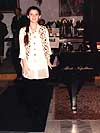
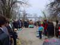

Екатерина Панна мечтала написать книгу и придумала ей название: "Четвертое скерцо Шопена, как моя жизнь". Не успела. Мелодия ее жизни оборвалась 18 июля 1999 г. на высокой ноте - "увидеть Париж и умереть". Она погибла в автомобильной катастрофе на пути из Парижа в Веймар. Ей предстояло солировать в концертах с Миланским, а с Йенским симфоническим оркестром был уже подписан даже контракт на исполнение осенью 4-го концерта Бетховена. Слава стучала в ее двери, но их уже некому было открыть… Она прожила неполные двадцать один год с такой страстной любовью к жизни, словно знала свою судьбу от рождения.
Родилась Катя в Николаеве и здесь прошла первая половина ее короткой жизни. Ее родители, Алексей Алексеевич и Ольга Варленовна, вспоминают, что в детстве никто ее специально не учил музыке. (На самом деле, я думаю, что отцу достаточно было для этого увлеченно поиграть на аккордеоне - родители, как известно, воспитывают детей примером личной жизни, а не наставлениями!) Четырехлетняя девочка вставала на два часа раньше всех, садилась за фортепиано и начинала подбирать мелодии, пытаясь их гармонизировать. В пять лет она не только легко подбирала знакомые мелодии, но уже начала сочинять свою музыку. Импровизация постепенно сделалась смыслом ее жизни во всем, чем бы она ни занималась. Писала ли стихи, рисовала ли любимого ею Паганини, играла ли в игры, делала ли уроки, сочиняла или осваивала новое музыкальное произведение. Любое простое повторение чего угодно вызывало скуку. Почувствовав влечение, родители пятилетнюю девочку отдают во 2-ю музыкальную школу. Александра Петровна Голубенко принимает ее к себе в класс, как внеплановую ученицу. С шести лет она учится в Средней школе № 2. В восемь лет она написала детскую оперу на стихи С. Маршака, которая исполнялась в нескольких музыкальных и общеобразовательных школах. В 10 лет открылся дар исполнителя - она проникновенно сыграла фантазию ре-минор Моцарта.
В 1988 году Катя переезжает в Киев и там продолжает учиться уже в
средней специальной музыкальной школе при Киевской государственной консерватории
им. Н.В. Лысенко в классе И.А. Липатовой, воспитанницы Петербургской
консерватории. Так что, с учителями Кате везло. Очевидно, талант чаще всего тянется
к таланту. Возможно, поэтому И.А. Липатова в своих воспоминаниях о Кате отметила,
что "мы с ней внутренне были очень близки потому и сделали вместе много хороших
программ". И далее Ирина Алексеевна продолжает: "Она в юности уже стала лауреатом
конкурса в Италии. Играла очень органично, очень красочно, ярко. Технических
сложностей для нее, по-моему, вообще не существовало, несмотря на то, что у нее
были маленькие руки. Они были настолько цепкие, насколько были следствием ее
желаний. Они воспроизводили все, что она слышала. А слышала она смело, легко,
безупречно с технической точки зрения и очень живо."
Нужно сказать, что исполнительский успех не сразу пришел к Кате. В 1992 году
она приняла участие в молодежном конкурсе пианистов в Геттингене (Германия),
играла десять пьес любимого Шопена и была награждена дипломом. Конечно, и это
можно было бы считать успехом, если принять во внимание, что эта сложнейшая
программа была подготовлена ею… за месяц с небольшим. Но, Екатерина Панна была
прирожденным борцом и артисткой, ей нужна была победа и она начала работать над
собой с еще большим упорством.
В 1994 году она завоевывает первую премию на престижном конкурсе молодых пианистов в Неаполе. Всех исполнителей по возрасту разбили на четыре группы, Катя выступала во 2-й группе, но играла музыку 3-й возрастной группы. Алексей Алексеевич вспоминает, что перед последним туром ей захотелось посмотреть Венецию. Они бродили там с утра до позднего вечера, а на следующий день Катя уже играла в финале в Неаполе. Отец волновался, - не устала ли она?! В ответ услышал: папа, я здесь займу первое место! Решение жюри было таковым: присудить первую премию Е.А. Панне, по всем остальным группам премии не присуждать! Жюри из известных мастеров мира дало ей за игру 100 очков из 100 возможных!
В 1996 году Катя была принята в Киеве на первый курс Музыкальной
национальной Академии Украины по классу фортепиано профессора М.Б. Степаненко,
председателя Союза композиторов, народного артиста Украины. Судя по высказыванию о
ней Михаила Борисовича, Катя достигла многого в понимании музыки:
"В ней была какая-то невероятная искренность, во всем, что она делала. Я не знаю
другого человека, который так обожал людей, обожал жизнь и музыку. Она все время
хотела выразить свою душу через музыку, через любовь к людям. Она тянулась к
каждому человеку, она любила людей, причем любила до обожания. Как будто она
чувствовала, что только на этой любви держится вся жизнь. Поэтому, когда она
садилась за рояль и играла (то ли это была 30-я соната Бетховена, то ли Шимановский,
то ли Шопен, то ли соната Моцарта ре-мажорная), люди воспринимали не сонату
Моцарта, не музыку, а вот этот миг общения, который был ради любви человека к
человеку. Катя была той связкой между людьми, той любовью, на которой держится
мир. Она была чрезвычайно одаренным человеком. Она обожала театр, она любила не
только классическую музыку, но и легкую музыку… Прежде всего в своем исполнении
она все время искала душу этого произведения. И поэтому она как бы перескакивала
через этапы. Ей раскрылось то, что не написано в нотах… Она была полна
непосредственной любви к людям и искала свою душу. И находила… В принципе, это -
феномен.
В нашем прагматичном мире многих интересуют конкретные достижения: завоевать
первые премии, уехать за рубеж, устроиться за границей. Ее это не волновало. Она
хотела успеха, как все, но она хотела успеха, который приносит радость через
музыку. И она очень часто этого в своем исполнении добивалась… И у меня такое
впечатление, мое искреннее, глубокое убеждение, что Катя была квинтэссенцией вечной
красоты, вечной душевной идеалисткой."
Все это живо напомнило мне слова Пушкина из "Моцарта и Сальери": "Нас мало
избранных счастливцев праздных, Пренебрегающих презренной пользой, Единого
Прекрасного жрецов." и я спросил у Ольги Варленовны: любила ли Катя поэзию
Пушкина и вообще кого она любила? Она ответила, что да, Катя любила его поэзию, но
Лермонтов, вероятно, по искрометности таланта и по предчувствию одинаковости судеб,
был ей ближе. Она любила его "Парус" и плакала над красотой его стихов "Ночевала
тучка золотая…" Однажды мать по телефону спросила Катю: С кем у тебя роман? На это
дочь ответила: У меня роман с роялем! И это не было шуткой. Это было всерьез. Ей, к
онечно же, нравились парни, которые ее окружали. Многие из них, вероятно, любили
ее. Но все эти увлечения укладывались в повторяемую ею формулу: "Я вас всех люблю!"
и главным, попрежнему, оставался роман с роялем…
Этот роман продолжался у Екатерины Панны всюду, где бы она ни выступала. Катя играла в Николаеве, Киеве, Москве, Петербурге, Быдгоще (Польша), Неаполе, Генуе (Италия), Эпиналле (Франция), Чехословакии и в Риге. Она принимала участие в конкурсах Горовца в Киеве и Артура Рубинштейна в Польше, но без успеха. В 1998 году в Риге на Катином выступлении присутствовал знаменитый музыкант Лазарь Наумович Берман, ученик А.Б. Гольденвейзера. Он сказал буквально следующее: мне показалось, что я слышал живого Моцарта! Берман пригласил ее продолжить учебу у него в консерватории в г. Веймаре (Германия). Катю приняли без традиционных экзаменов и собеседования - профессору музыки Питеру Ваасу, окончившему Московскую консерваторию и аспирантуру у Элисо Вирсаладзе, оказалось достаточным услышать ее игру в записи. Это приглашение, несомненно, было почетным и свидетельствовало о признании таланта. В Веймаре ее окружили вниманием, ее игра вызвала повышенный интерес у понимающей публики. Город И. Гете в 1999 году был избран центром мировой культуры. У нее был концерт в доме музее Ф. Листа и Екатерина Панна удостоилась редкой чести - сыграть на рояле легендарного пианиста! Лазарь Наумович разговаривал с Катей, как с равной, и уделял ей много времени за пределами положенного. Так, даже в день ее рождения, 20 декабря 1998 года, они засиделись за роялем до 12 часов ночи. Однажды этот маститый музыкант с мировым именем признался ей в присутствии ее отца: "У тебя, девочка, есть уже то, чего нет у нынешних знаменитостей"…
С 1998 г. Катя занимается одновременно в Веймаре и Киеве, сдавая необходимые экзамены и зачеты в двух Музыкальных академиях Украины и Германии. В мае 1999 года Екатерина Панна принимает участие в престижном конкурсе уже взрослых пианистов в Генуе (Италия). В финал Катя выходит с двумя итальянками?! И снова маститое жюри дает 100 баллов из 100, присуждая ей первую премию! Заключительный концерт Екатерина Панна, как лауреат, дает в соборе, где играл любимый ею Паганини, уроженец Генуи. После ее выступления весь зал поднялся и длительно аплодировал ей, стоя… Всюду с гордостью Екатерина Панна заявляла, что она из Украины! Два конкурса, выигранных в Италии создали ей имя, ее игра заинтересовала выдающихся музыкантов. Особенно тепло об игре Кати отзывалась Э.К. Вирсаладзе.
Но мне не хотелось бы лепить из Кати какой-то сусальный образ. По словам родителей, в жизни она была вполне обычной, весьма общительной девочкой, душой мно-гих молодежных компаний, со всеми достоинствами и недостатками ищущей натуры. Приезжая домой в Николаев, она с охотой выступала перед учениками своей музыкальной школы №2. Дети, услышав ее игру, называли ее великой пианисткой и задавали ей самые разные вопросы. Отвечая на один из вопросов, Катя как-то заметила, что в жизни ей хотелось бы зависеть только от Музыки. Она любила искусство во всех его проявлениях, все красивое, дизайн сам по себе, одежду, архитектуру городов. Она играла в настольный теннис, любила слушать и рассказывать анекдоты, танцевала и пела русские романсы. Любила пиво, как все немцы. Пропускала лекции, как все славяне, и тут же наверстывала упущенное. У нее было множество друзей в Киеве и Веймаре. Ее друзьями в Веймаре были Алексей Гетьман из России и Виктор Хофман. О последнем из них, русском немце, студенте-архитекторе Bauhaus-Universitat Weimar скажу особо. Гибель Кати так глубоко затронула его, что он, никогда не писавший по-русски, создал парафраз на строки из ее стихотворения: "Я когда-нибудь умру И пойму, что такое душа…", вот он:
Я когда-нибудь стану мудрей
И пойму, что такое душа,
И под шелест осенних дождей
За тобой поспешу, не дыша.
И настигнув тебя на ветру,
Я промолвлю, обняв тебя вновь:
"Ангел мой, я когда-то умру
И пойму, что такое Любовь."
Игра Екатерины Панны становилась все совершенней, она признавалась родителям, что уже играет не то, что может, а то, что хочет. Обо всем она старалась рассказывать музыкой. Едва ворвавшись на зимних каникулах в начале 1999 года в дом, она села за рояль и сказала - а теперь я расскажу все о себе, послушайте… В музыке она была всеядна, любила многих композиторов от Баха до Шостаковича, Прокофьева и Скрябина. Но Шопен был ее особой любовью. Она говорила, что тот, кто играет Шопена, тот может сыграть все! И это не случайно, ибо Шопен был предан и изучил фортепиано так досконально, как ни один из великих композиторов. Катя мечтала сыграть всего Шопена. Приходиться только сожалеть, что практически не сохранилось профессиональных записей ее выступлений, на каждом из которых она играла, как в последний раз, по-другому она просто не умела.
Особой любовью пользовалось у нее Скерцо № 4 ми-мажор ор. 54 Фредерика Шопена, одна из подлинных жемчужин классического репертуара, но отнюдь не легкая вещь в исполнении. Путь Кати к пониманию скерцо не был простым. На протяжении последних трех лет жизни она постоянно возвращалась к его исполнению и даже говорила матери своей, что это ее жизнь в изложении Шопена. Ольга Варленовна рассказывает, что иногда она приходила к ней в спальню и, усталая, засыпала у нее на кровати, а утром, во сне, на руке матери, как на клавиатуре, отрабатывала пальцами игру скерцо.
Я слушал и смотрел не один раз в видеозаписи исполнение Екатерины Панны скерцо № 4 Шопена, пытаясь понять, что же гениальный композитор заложил в это сравнительно короткое, как и жизнь исполнительницы, произведение, которое выглядит как целая баллада? Фредерик Шопен (1810-1849) написал его в 1842 году, после трагической смерти от чахотки одного из самых близких его лицейских друзей Яна Матушиньского. Он был врачом по образованию, участником ноябрьского восстания в Польше в 1831 г., эмигрировал в Париж, некоторое время жил вместе с Шопеном на одной квартире. Известно, что Шопен чрезвычайно глубоко переживал разрыв с родиной, кончину своего друга, предвидя близкую смерть отца своего (1844 г.) и надвигающийся разрыв с Жорж Санд (1847 г.). Словом, это был тот самый переломный момент, когда жизнь явно идет на убыль. Через три года, Шопен заболел, а скончался в 1849 г. в Париже. Согласно воле Шопена сердце его было перевезено сестрой Людвикой в Варшаву и захоронено в подземелье костёла Святого креста. В 1879 году оно было замуровано в одной из колон этого храма и установлена доска с надписью: "Фридерику Шопену - соотечественники".
Возможно именно тогда Шопен понял, что жизнь так коротка и так стремительна, что похожа на шутку (скерцо - "шутка" с итальянского). Но, если успеешь отдать людям все тепло души и сердца, то жизнь может стать сонатой, т.е. "звучащей" (в переводе с латинского). Неслучайно известный музыковед Игорь Бэлза писал о четвертом скерцо Шопена, что "Структура скерцо наделена чертами сонатности." До Шопена скерцо было частью циклических произведений, а в 4-м скерцо, оно уже звучит, как самостоятельная композиция большого плана. По сути, это раздумье Шопена о бурях своей жизни, фатальности судьбы и неизбежности смерти. Все великие произведения создавались в переломные моменты жизни, как нравственное преодоление, выпавших испытаний. Поэтому мажорная тональность окрашивает эти драматические размышления жизнеутверждением всепобеждающей любви. Краткая, но ярко прожитая жизнь, может стать явлением, если она наполнена любовью.
Разностороннее развитие, тонкий ум и благородство характера, непринужденное изящество манер придавали Шопену редкую привлекательность - они источник его глубоко национальной, утонченной и шляхетной, благородной, музыки. Почти все, что сказано исследователями жизни Шопена о развитии его таланта в лицейские годы: артистизм, создание стихов, рисунков, пьесок для домашних спектаклей, импровизации во всем, что его интересовало, в той или иной мере, повторила и Екатерина Панна в своей жизни. Любовь и доброта, которую она источала, были явным следствием переполнения ее талантами. Можно сказать, что она мыслила и разговаривала с Шопеном на одном языке. Родство душ творческих людей не знает временных рамок. Этим и только этим можно объяснить постижение Екатериной Панной внутренней тайны одного из самых сложных творений великого композитора. И чем дольше я вслушиваюсь в исполнение Катей последнего скерцо Шопена, тем больше начинаю понимать, что выше Музыки в этом мире ничего нет и не может быть - это язык самого Господа-Бога!
Нечто подобное я испытал, когда в 1981 г. мне каким-то чудом удалось попасть на один из последних концертов Е.А. Мравинского в Большом зале тогда Ленинградской филармонии. Маэстро дирижировал уже полусидя, в основном глазами. Исполнение оркестром симфоний Моцарта и Шостаковича было таким совершенным, что в зале установилась атмосфера полнейшего благоговения. Вот тогда-то мне стало ясно, что публика может быть тоже гениальной… (Концерт в переводе с итальянского означает "соревнование", в первую очередь, публики и оркестра.) После каждого исполнения наставала такая пауза тишины, какой я потом уже никогда не встречал. Душа так далеко улетала, что руки долгое время просто были не в состоянии аплодировать до ее возвращения… Не помня себя, я вышел из зала и, минуя метро, пошел пешком через весь Петербург в гостиницу. Музыка, усиленная архитектурой старого города, не оставляла меня и как-то, сами собой, готовыми, возникли строки:
Николаев,
12 октября 1979 года
Николаев, лето 1980 г., отец, мать, дочери 1,5 года
Кате 6 лет
г. Николаев 1984 г.
Герои детской оперы,
г. Николаев, 1986 г.
Автор детской оперы, Катя, аккомпанирует
В музыкальном классе специальной школы,
Киев, 1989 г.
Катя, Ирина Алексеевна Липатова и Вика Ермольева
Киев, 1996 г.
Выступление на конкурсе в Неаполе, 1994 г.
Неаполь, 1994 г.
Неаполь, 1994 г.
Неаполь, 1994 г.
Алексей и Екатерина Панна, 1998 г.
Катя и Михаил Борисович Степаненко, Киев 1998 г.
Рига, 1998 г., Катя с отцом
Вход в пианестические залы Музыкальной академии, г. Веймар
Катя и Л. Н. Берман, г. Веймар 1998 г.
Улицы Веймара,
1998 г.
Улицы Веймара,
1998 г.
Катя возле дома, где жил И. С. Бах,
Веймар, 1998 г..

общежитие академии,
г. Веймар 1998 г.
Любимое кафе,
Веймар, 1998 г..
И, если есть на свете Бог,
так это - Музыка святая,
в ней звук, смеяся и рыдая,
души переступил порог…
Кто ещё может так?! играя,
непостижимое объять,
вселенность чувства передать
и приоткрыть ворота рая...
Катя играет на рояле Ф. Листа, г. Веймар 1998 г.
Вручение премии за первое место, Генуя 1999 г.
Все талантливые творцы - пророки. Екатерина Панна не была исключением. Уезжая последний раз из Николаева в Веймар, она плакала и говорила, что сюда больше не вернется. Еще раньше она говорила матери: я погибну в автомобильной катастрофе. Несомненно, Катя проникла душой в самые потаенные мысли Шопена через его великую музыку и увидела в ней свою близкую кончину. Шопен, как известно, выступал на большой публике редко, больше любил камерную обстановку для своей игры. Один из таких вечеров описал музыкальный критик Э. Легуве: "Сев за рояль, Шопен обычно играл до изнурения… Он чувствовал и мы чувствовали, что какая-то часть жизни утекла вместе со звуками; он не хотел остановиться, и у нас не было сил его остановить! Волнение, сжигавшее его, охватывало и нас!" Ольга Варленовна рассказывает, что точно такое состояние она испытала в самый последний раз, когда ряд друзей Кати, их родителей, около 15 человек, попросили ее в Веймаре поиграть для них. Они зашли в один из классов Музыкальной академии и совершенно импровизированный концерт длился больше двух часов. Катя играла с таким подъемом и с такой самоотдачей сонаты Шопена, Бетховена и Шуберта, Листа, фрагмент 4-го концерта Бетховена, что у многих стояли слезы на глазах. Друзья пытались ее остановить, пощадить, но она исполнила еще и весь, довольно продолжительный, 1-й концерт Шопена. Это исполнение стало публичным прощанием с Музыкой. Через две недели она погибнет там, где упокоился Шопен. В этом есть какая-то мистика, но похоже, что именно он позвал Екатерину Панну к себе в Париж…
Алексей Богданович и Катя,
Киев, 1997 г.
Вика Зубкова, Катя, Лариса Красовская, Владимир Пресняков, Киев, 30 марта 1999 года
Волнение охватывает меня, когда я вспоминаю тот единственный живой концерт в апреле 1995 г., на котором мне случайно удалось побывать в музыкальной гостиной Николаевского областного художественного музея им. В.В. Верещагина Волнуюсь и сегодня, когда слушаю и смотрю в записи игру Екатерины Панны. Такого Баха, Моцарта, Шопена я еще не слышал! И это притом, что мне посчастливилось побывать более, чем на 300 концертах классической музыки и видеть живую игру таких выдающихся пианистов, как Рихтер и Гилельс. Кароля Шимановского обычно музыканты боятся играть, на конкурсах тем более, а Катя играла его уже в выпускном классе Музыкальной школы!
Катя исполняет романс, справа - Виктор Хофман
Меня могут упрекнуть в том, что я переоценил талант Екатерины Панны. Музыку, как известно, словами описать невозможно. Но, можно посмотреть видеозапись ее исполнения "Тарантеллы" Ф. Листа, не самого сложного произведения и записанного к тому же еще за 4 года до гибели, а также послушать здесь на сайте в ее исполнении Баха, Моцарта, Шопена, Шимановского. Уверен, что у любого человека, даже ничего не понимающего в Музыке, с первых аккордов исполнения сразу же возникнет чувство чего-то значительного и необыкновенного. За внешне кажущейся легкостью исполнения Кати стояла ежедневная, многочасовая работа и абсолютная память. В ее голове хранилось множество сложнейших музыкальных произведений, которые она после отработки могла воспроизвести без малейших ошибок! На ее концертах никто не стоял у нее над душой, перелистывая ноты, - только рояль, только публика и только Музыка, переполнявшая ее…
Алексей Гетьман и Катя
Изучая четверть века жизнь Гомера, Илариона, Пушкина, я заметил, что существует два рода гениальности: медленно развивающаяся (Гомер, Иларион, Леонардо да Винчи, Лев Толстой и др.) и взрывная (Рафаэль, Моцарт, Пушкин, Лермонтов, Шопен), одним из самых харктерных признаков которой является абсолютная память, на все услышанное, прочитанное и увиденное. Из сравнения путей и времени развития каждого из гениев можно сделать вывод, что имеется вполне определенная предельная скорость развития гениальности, превышение которой, как и достижение любым телом скорости света, приводит к аннигиляции. Каким образом реализуется взрыв при этом (дуэль, автомобильная катастрофа, болезнь, мы так и не знаем подлинного диагноза смерти Рафаэля и Моцарта!) не имеет значения. Ясно одно, что их быстрая гибель неминуема и неотвратима, как рок судьбы…
Несомненно, Екатерина Панна сжигала себя дотла в своей игре в предвидении близкой кончины. Она приняла вызов судьбы и пошла навстречу страху! Это было ее жизненным кредо, Божьим пророчеством и смыслом жизни. Но, понимание миссии Е.А. Панны, величины ее таланта и скорости его развития, увы, пришло к нам не сразу. Жизнь, как известно, уравнивает всех. И только отсутствие определяет цену всему. С учетом сказанного выше, можно заметить, что Екатерины Панны не будет хватать нам всегда и всем, ее друзьям (она всегда оказывалась, незаметно и как бы случайно, рядом с теми, кто нуждался в ее помощи!), но более всего ее родителям. Они говорят сегодня о 20-ти годах счастливейшей жизни с дочерью, как о жизни в раю Музыки…
Екатерина Панна родилась в Николаеве 20 декабря 1978 г., почти в один день с кончиной Святого Николая чудотворца (19 декабря 345 г.) - ангела-хранителя нашего города. В этом я вижу один из самых сильных залогов расцвета ее таланта именно на Николаевской земле. Катя погибла под Парижем 18 июля 1999 г., в день обретения честных мощей преподобного Сергия Радонежского (1422 г.), пророка России, спасшего ее от татарской неволи, и это тоже обещает ей вечную жизнь в памяти людей. Такие совпадения не бывают случайными!
Православная церковь считает кончину любого человека рождением к новой, вечной, жизни. Родители Е.А. Панны предпринимают усилия, чтобы перевести в цифровой вид все сохранившиеся видео и аудио записи выступлений дочери. Бережно хранят память о ней ее друзья в Киеве. Прошли концерты памяти Екатерины Панны в Гамбурге, Софии и Веймаре. В средней специальной музыкальной школе при Киевской государственной консерватории им. Н.В. Лысенко в этом году прошел первый конкурс имени Екатерины Панны и есть надежда, что конкурс может принять еще и общекиевский масштаб. Юлия Симеонова сделала в Киеве о ней видеофильм и показала его в своей программе "Аплодисменты". Талантливая николаевская тележурналистка Лилия Албеску создала два видеофильма о ней. Отец в 2002 г. в Николаевском издательстве "ЧП Гудым" выпустил брошюру "Свято-Екатерининский храм созидается". Для храма, по заказу отца, иконописец Дмитрий Фан написал иконы: Святой Екатерины велико-мученицы; Христа Спасителя; Святой Марии Константинопольской; семьи Николая II и Святого Николая-Чудотворца. Все они уже выставлены в Николаевском храме Рождества Богородицы и будут омолены до установки в своем храме.
Икона Святой Екатерины великомученицы
Да, Екатерина Алексеевна Панна не успела многого сделать из того, что собиралась, но имя ее несомненно войдет в историю Николаевского края и Украины, как талантливой пианистки. Главное, однако, состоит в том, что своей жизнью и творчес-твом дочь вдохновила отца, Алексея Алексеевича Панну, на сооружение в Николаеве храма Святой Екатерины великомученицы. Не буду говорить о тех невероятных трудностях, которые он претерпел и терпит, о тех средствах, которые он уже вложил в строительство храма. Скажу только, что первыми его идею поддержали жители Веймара, где через несколько месяцев после трагической гибели Кати и ее подруги, тоже талантливой пианистки из Болгарии, Милы Бакаловой, состоялся концерт памяти в центральном зале Музыкальной академии. Собранные на нем средства были переданы отцу Кати на строительство храма в Николаеве. Особенно трогательным был вклад единственного музыканта, уцелевшего в одной автокатастрофе с Катей, немца Филиппа Розелера, который отдал на это святое дело все свои студенческие сбережения. Думаю, что аналогичные благотворительные концерты памяти Е.А. Панны можно было бы проводить ежегодно в Киеве и Николаеве, пока храм не будет выстроен.
Алексей, Ольга Панна и Питер Ваас,
Веймар, 2001 г.
Храм получил благословение Епископа Николаевского и Вознесенского Питирима и Николаевского городского головы В.Д. Чайки. Владимир Дмитриевич, утверждая документы на строительство храма, сказал пророческие слова: "Если Богу угодно, то храм будет построен!" Но, Бог, как известно, действует через нас, живущих на земле. Сооружение нового храма Святой Екатерины великомученицы само по себе имеет историческое и нравственное значение не только для города Николаева. Подобные храмы по древней традиции сооружались всем миром. Строительство храма уже начато в г. Николаеве на сквере между Варваровским спуском улицы Фрунзе и улицей Спасской. Но, деньги, собранные для этого в Веймаре и личные сбережения отца Екатерины Панны, уже на исходе.
Начало строительства храма в 2002 году
Панна А.А., Закладка фундамента, 2003 год
Служба на Пасху на месте строительства Храма
27 апреля 2003 г.
24 мая 2003 г. Николаевский Пушкинский клуб провел в Николаевском областном художественном музее им. В.В. Верещагина вечер памяти Екатерины Панны. В связи с этим, чтобы не уронить честь города в глазах мировой общественности, по поручению Пушкинского клуба, я обращаюсь с просьбой оказать финансовую помощь в строительстве храма Святой Екатерины великомученицы ко всем жителям и руководителям предприятий и частных фирм города Николаева и Украины!
Деньги на строительство храма Святой Екатерины отдельные граждане, предприятия и фирмы
Украины, кто желает поддержать это святое дело, могут направлять по адресу:
Украина, 54001, г.
Николаев,
Городское отделение ощадбанка № 8351/102,
МФО 386069, р/с 290909009, код 0274513. Тел.
(0512) 24-86-64, Л/с 54910 Панна Алексей Алексеевич. Просьба указывать при этом имя и фамилию.
Имена всех пожертвователей А.А. Панна планирует высечь на стенах храма. К сказанному добавлю, что это
как раз тот редкий случай, когда выделенные деньги до копеечки будут использованы по назначению
весьма заинтересованным в этом лицом!
Смотрю на неортодоксальный и потому уже неординарный проект храма Святой Екатерины великомученицы, на удивительно красивое место его расположения, и внутренне ощущаю, что своим взволнованным ритмом и пассажами граней стен, которые словно пальцы пианиста, прорастающие из земли, обнимают элегантный мажор эйфелеподобного прозрачного шатра, возносящего маковку храма с крестом к небу, и думаю о том, что это и есть звучание в архитектуре последнего скерцо Шопена, но уже в исполнении отца Кати, основного автора и строителя храма, Алексея Алексеевича Панны!
Проект храма Святой Екатерины великомученицы